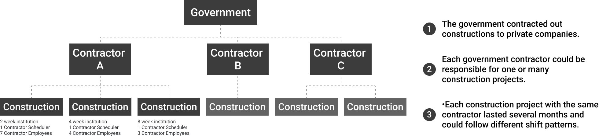
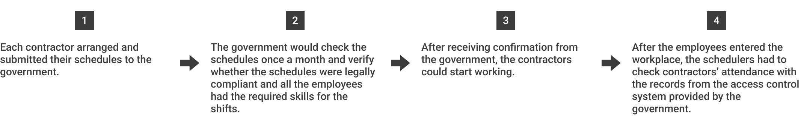
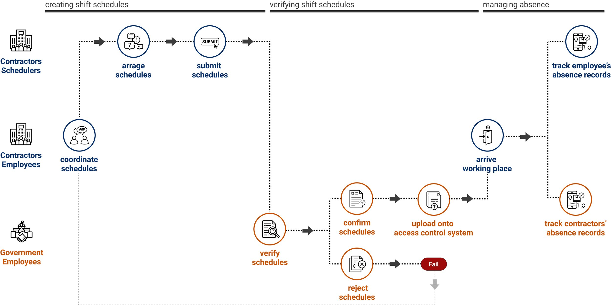
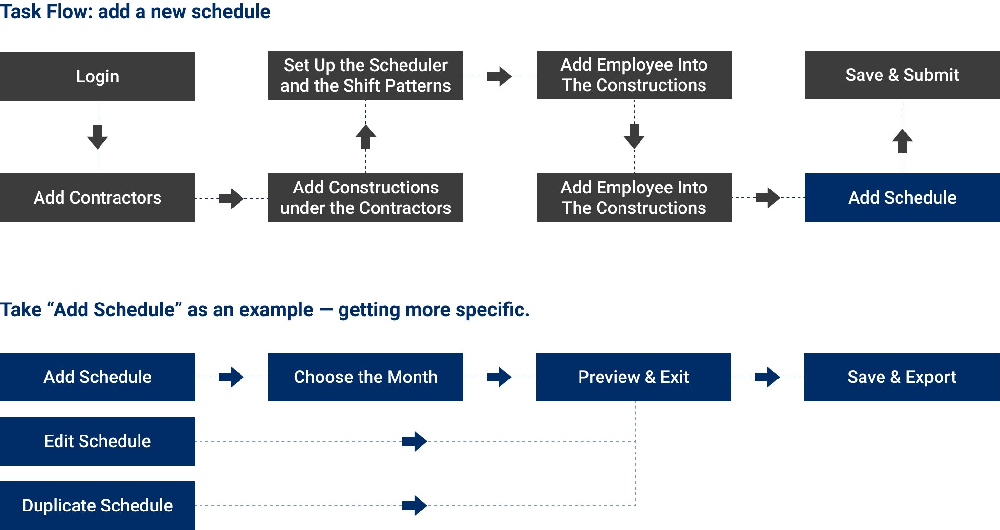
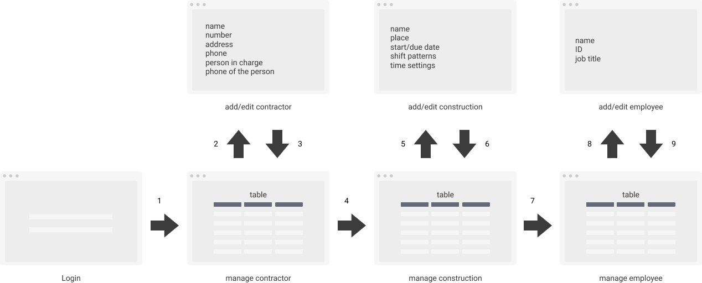
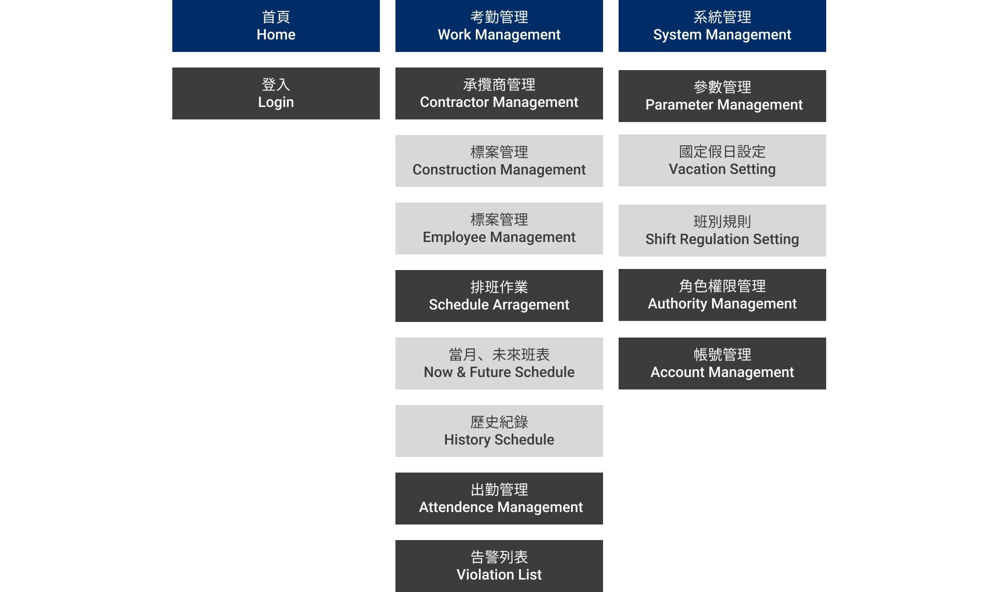
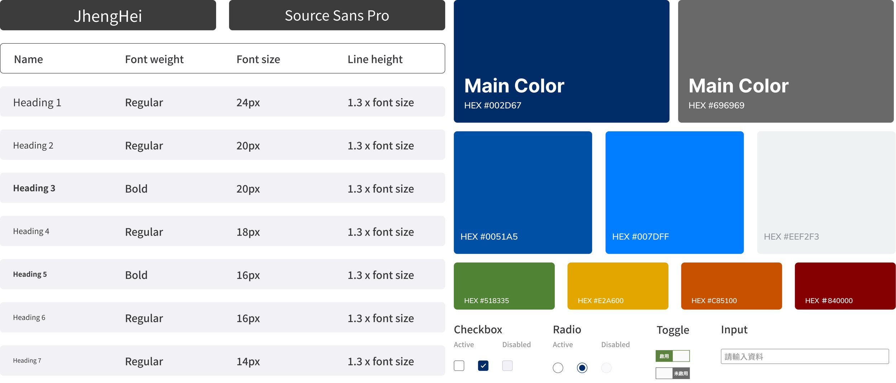
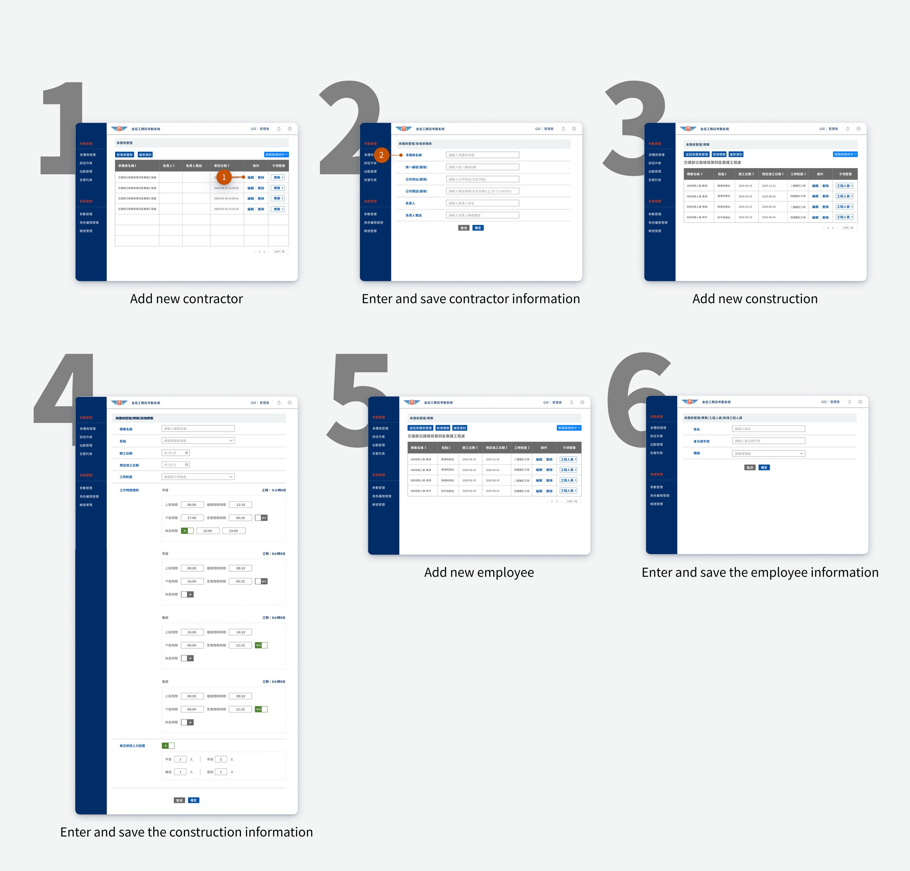
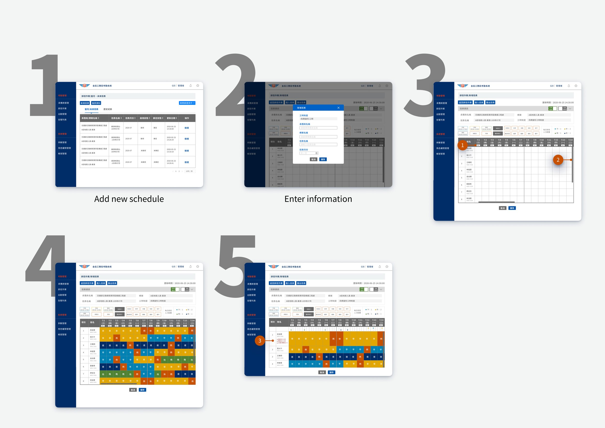

Employee Scheduling Software
@ Directorate General Of Highways,
Taiwan Ministry Of Transportation And Communications

Overview
Our goal was to simplify government contractors' work schedule management by replacing paper-based
processes with an electronic system. The system facilitated three key actions:
(1) contractors could
create schedules
(2) the government could verify schedules
(3) supervisors could track absence
records.
Timeline
3 month
Team
1 Project Manager, 1 UX/UI designer and Front-end developer, 1 Back-end Developer, 1 Back-end
Engineer
My Role
Main UI/UX design, Front-end engineering
User Interviews
We conducted one-on-one interviews with three key users to understand work processes and challenges. Two
government employees verified shift schedules and monthly absences, and one contractor/scheduler created new
schedules. Insights from these interviews guided the ideation process. User flows were created for each
role, and proposed main functions addressed identified issues.

The Correlation Between Multiple Users

Previous Paper-Based Working Process
User Goal
- Government Employees: ensure schedules comply with the law and construction
deadlines are met.
- Contractors’ Schedulers: efficiently arrange schedules and manage attendance.
- Contractors: fulfill requests for time off.
Problems
Government Employees
- Examined monthly schedules in Excel, which was time-consuming due to different shift
patterns based
on laws (e.g., two-week or four-week institution) for each project.
- Spent significant time communicating with schedulers about shift arrangement problems.
- Ensured timely submission of all schedules.
Contractors (Schedulers)
- Users accidentally edited finished schedules, leading to spreadsheet errors.
- Schedulers spent more time dealing with employee collective agreements than planning
schedules due
to different time-off requests.
Meanwhile, from the interviews, we know that users are afraid of: Users expressed fear of a
significant learning curve and mistakenly deleting important work materials when adapting to a new
system.
Ideation
Design Objectives And Direction
Reduce Compliance Issues
Objective: Promote collaboration and transparency among schedulers and
contract employees; empower employees with quicker responses to time-off requests and fair
overtime.
Solution: Role-based system logins were provided for process
participants, with different permissions based on roles.
Cut Down Scheduling Time
Objective: Decrease schedulers' time spent on schedules and prevent
duplicated efforts.
Solution: Automatically detect conflicts, such as overlapping shifts or
minimum rest periods, to eliminate error-prone spreadsheets.
Improve Usability
Objective: Enable effective goal attainment for users, even if they are
new to technology.
Solution: Reduce significant behavior changes compared to previous Excel
processes.
Expected Journey Map
When dealing with projects involving diverse users and objectives, I develop a journey map and task flow
for the primary goals of the system. Both help me visualize the entire process.

Using the journey map, I can delve into the actions necessary to accomplish primary goals.
Task Flow
The flow outlines steps to achieve a specific goal, ensuring sequential and thorough design while
clarifying responsible parties for each phase. Examining details in this way enhances the system and
facilitates design of complex user flows.

Wireframe
I place the emphasis on what information should I request them to add in each section to this
system.

After listing all necessary information, I organize it into understandable, clear, and intuitive data
while ensuring user-centric design for easy goal attainment by multiple users.
Information Architecture

Design Style Guide

Final Design And Spec
Iteration Of The Adding Schedule Process
We tried multiple schedule management methods on LiveServer. With limited
time, I coded both prototypes. A dropdown selection method was initially employed to reduce version control
problems, but it required two steps for each schedule and lacked clear day/night shift differentiation. The
color-picking method, mirroring previous Excel editing, was adopted in the second attempt.
Set Up All The Information Needed To Add The Schedule
Buttons are crucial for accurate interactions, with links for navigation and buttons for action, each
with distinct styles. Table structure was employed for the information addition page to accommodate
multiple formats. Headings were aligned with data, and text left-aligned for consistency and clarity.

- Labels distinguish each week to comply with maximum weekly working hour regulations, with red labels
indicating national holidays.
- Horizontal and vertical scrolling allow for flexible schedule editing.
- Our system checks for problems and notifies users upon saving the schedule.

Reflections
Learn more about how to use Javascript to create function features
I can create front-end tables with sorting, filtering, and pagination, as well as a color-picker
selection function. While I used to rely on libraries for such functions, they often lack necessary
design or features. Independent implementation offers greater flexibility over functionality and
design.
Experiencing a full design process for a new platform from ideation to launch
My Role in This Project
As both designer and front-end developer, balancing roles and addressing conflicts can be
challenging and not always cost-effective. However, having relevant background in both areas enables
effective communication with the team and clients, and allows for design outcomes that complement
transitions and effects.
A Design guideline is needed
Standardizing design formats like typography, font sizes, colors, inputs, and buttons is beneficial.
Organizing reusable components like login page, navigation bar, and tables saves time in client
communication and enables easy assembly of designs for various applications. It also establishes a
company style.
Final thoughts
After completing a project, I question if my design produced the best solution. Initially, working
with inexperienced government partners on digital products and system experiences was frustrating.
However, I learned my role as a supporter to help and guide public servants in tackling challenges
and understanding problems. Design has no optimal solutions, yet with limited time and resources, I
believe we arrived at the best solution at that time.